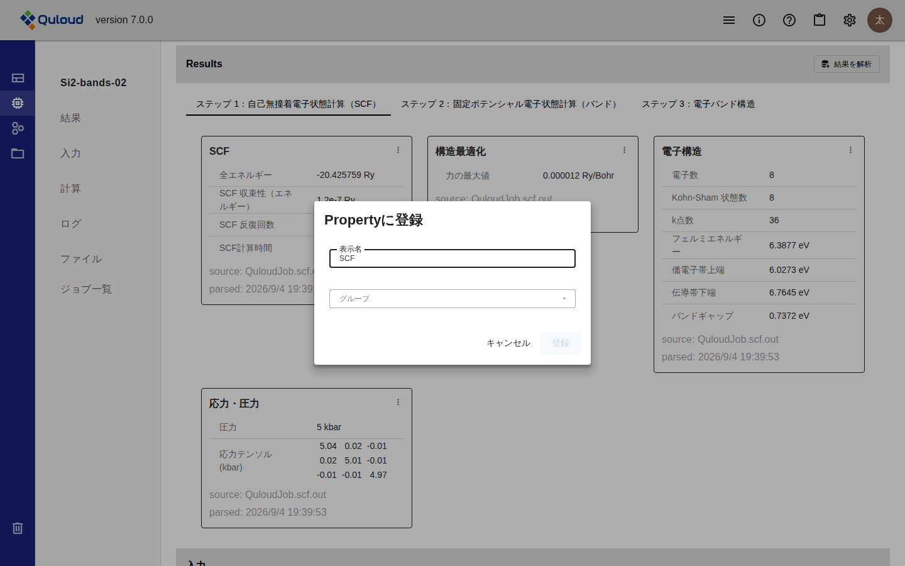
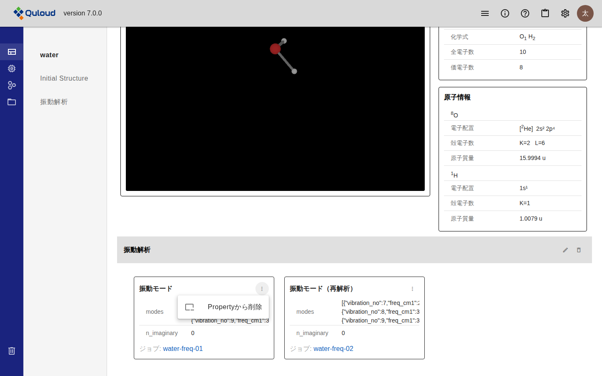
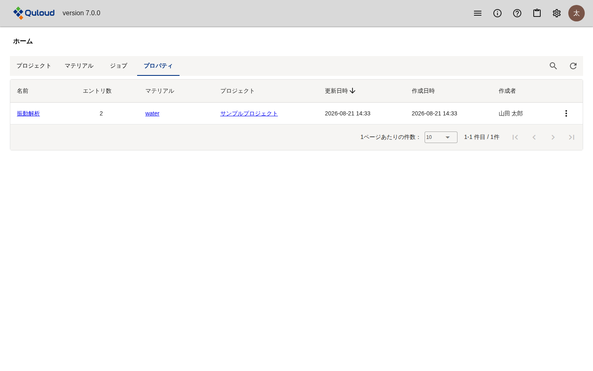

11. Property
注釈
本章は Quloud Ver.7.0 を対象としています。記載内容の確認日は 2026 年 9 月 8 日です。
11.1. 概要
Property は、計算結果のカードを Material に貼り付けたものです。 Job をまたいだ結果を 1 つの Material の画面に並べて比べられます。
結果のカードは、それを出した Job の詳細画面にしかありません（計算結果の可視化 の章）
Property に登録すると、Material 詳細画面の「プロパティ」に並びます
Property は**グループ**にまとめます。グループが画面上の見出しになります
注釈
Ver.6.1.2 では、Succeeded で終わった Job が自動的にその Material の Property になり、 「Select Property」で切り替えて見る形でした。Ver.7.0 では自動登録はありません。 見たい結果を選んで登録します。
11.2. 前提
登録したい結果のカードが Job 詳細画面の「Results」にあること （計算結果の可視化 の章）
11.3. 操作手順
11.3.1. 1. 結果のカードから登録する
Job 詳細画面の「Results」で、登録したいカードの右上にある「⋮」から 「Propertyに登録」を選びます。

図 11.1 「Propertyに登録」ダイアログ
項目 |
内容 |
|---|---|
表示名 |
Material の画面に出す名前です。カードの名前が初期値として入ります。 同じ計算を条件違いで並べるときは、ここで区別が付く名前にします。 |
グループ |
登録先のグループです。既存のグループを選ぶか、 「＋ 新規グループを作成」を選んで名前を入力します。 |
グループの指定は必須です。 どちらも指定するまで「登録」は押せません。
11.3.2. 2. Material 詳細画面で確認する
Material 詳細画面の「プロパティ」（左のメニューの一番上）を開くと、初期構造の下に グループごとの見出しとカードが並びます。
図 11.2 Material 詳細画面のプロパティ
グループの見出しは、左のメニューにも並びます。押すとその位置まで移動します
各カードの下には、結果を出した Job へのリンクがあります
結果のカードと同じ見た目で表示されます。バンド図や状態密度の図もそのまま並びます
11.4. グループの操作
グループの見出しの右にあるアイコンで、名前の変更と削除ができます。
アイコン |
動作 |
|---|---|
鉛筆 |
グループ名をその場で編集します。Enter で確定、Esc で取り消しです。 |
ごみ箱 |
グループを削除します。確認のダイアログが出ます。 |
警告
グループを削除すると、その中の Property もすべて削除されます。 計算結果そのもの（Job 詳細画面の「Results」のカード）は残ります。
11.5. Property カードの操作
各カードの右上の「⋮」からメニューが開きます。

図 11.3 Property カードのメニュー
項目 |
動作 |
|---|---|
Propertyから削除 |
この Property を外します。計算結果そのものは残ります。 |
モデリング |
最終構造の Property にだけ表示されます。その構造をモデラーで開きます （モデリング の章）。 |
ジョブ作成 |
最終構造の Property にだけ表示されます。その構造を使って次の計算を 登録します（計算 Job の登録 の章）。 |
Materialとして保存 |
最終構造の Property にだけ表示されます。その構造を新しい Material として 登録します。 |
11.6. プロパティの一覧
ホーム画面の「プロパティ」タブに、テナント内のプロパティグループが一覧されます。

図 11.4 ホーム画面のプロパティ一覧
「名前」を押すと、その Material の画面のグループの位置に移動します
「マテリアル」「プロジェクト」からもそれぞれの画面に移動できます
右端の「⋮」から、グループ名の変更と削除ができます
11.7. 注意事項
Job を削除すると、その Job から登録した Property も削除されます。 グループは残りますが、中身は空になります。
Material を削除すると、その Material のグループと Property もすべて削除されます。
Ver.6.1.2 の「Select Property」で結果を切り替える方式は Ver.7.0 にはありません。
結果のカードが作られない計算では、登録できる Property もありません （計算結果の可視化 の章）。